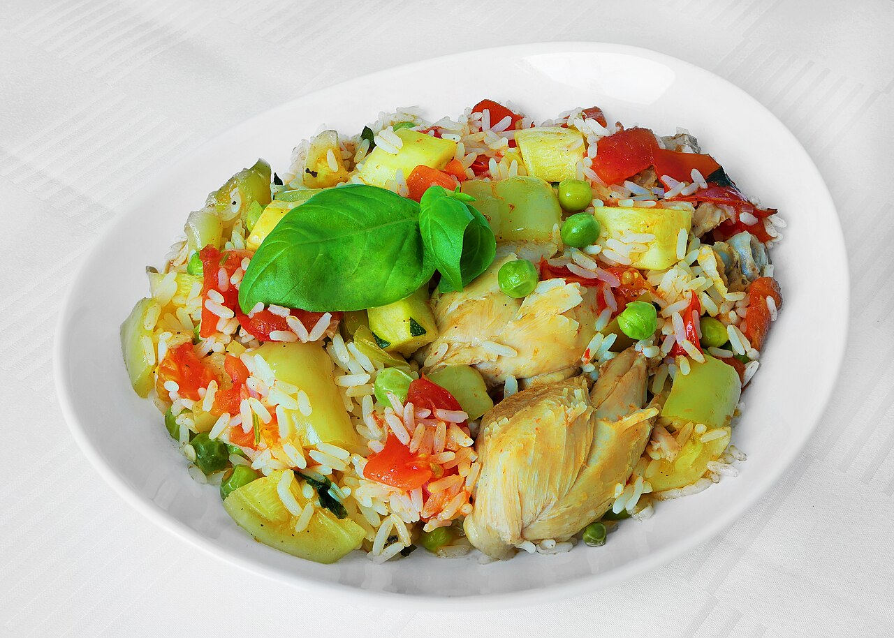
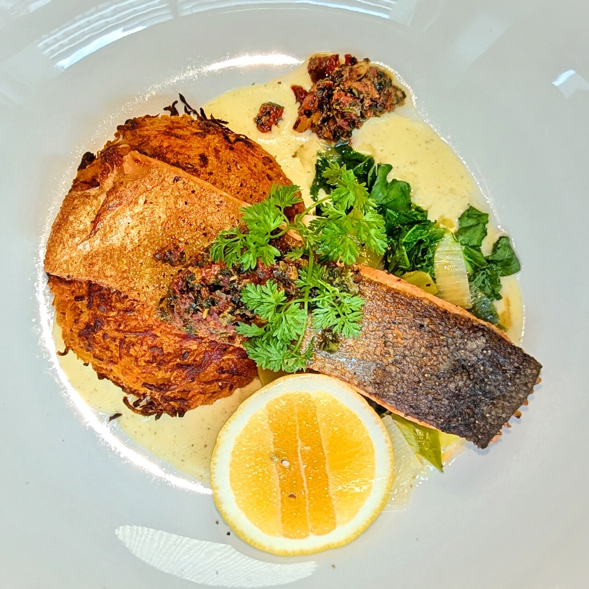
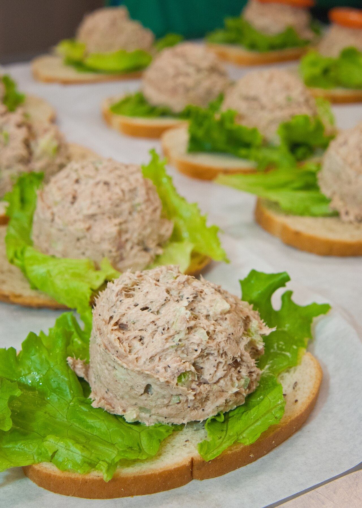
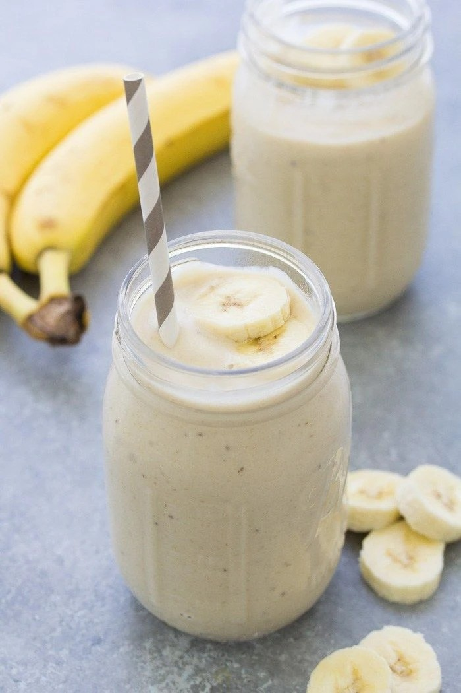

Favorites

Grilled Chicken & Rice Bowl
$4.50 558 Calories 25 min
Protein 52.8g Carbs 47.3g Fat 16.2g
Needs shopping

Salmon & Sweet Potato
$5.80 543 Calories 30 min
Protein 34.1g Carbs 32.2g Fat 29.9g
Needs shopping

Tuna Salad
228 Calories 5 min
Protein 27.6g Carbs 5.1g Fat 11.3g
Needs shopping

Banana Smoothie
$2.00 377 Calories 5 min
Protein 15.6g Carbs 62.2g Fat 10g
Needs shopping